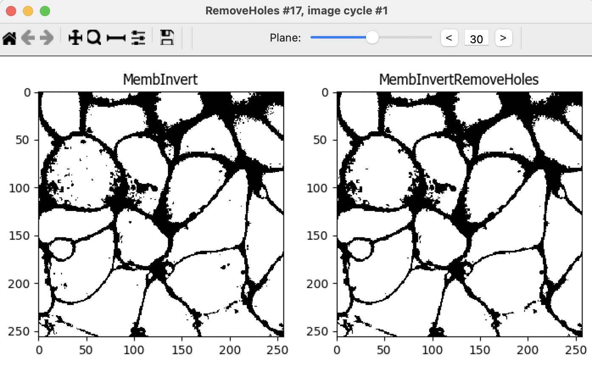

CellProfiler Tutorial: 3d
monolayer
Organizing and importing
images
Z-stacks as TIFFs
- This tutorial features images of human induced pluripotent stem
cells from the Allen Institute of Cell Science. More details are
available at the following link: https://bbbc.broadinstitute.org/BBBC034.
- CellProfiler 3D currently only works with TIFF files. TIFF files can
be rather complicated, having hyper-stack structures with all channels
and z-planes in a single file. The acceptable CellProfiler format for
storing z-stacks is to have a separate TIFF file for each channel.
- CellProfiler can be used to convert from other file formats to
individual TIFF files for each channel using the
SaveImages module.
- Note that this tutorial is an advanced tutorial. We recommend
completing the Translocation tutorial in order to learn principles of
image thresholding and segmentation prior to starting this
tutorial.
- Appropiately naming the output(s) of each CellProfiler module is
important in order to avoid confusion,especially in large and complex
pipelines. Throughout this tutorial we will suggest names for each of
the outputs, but feel free to use your own.
- This tutorial will guide you through the creation of a complete
analysis pipeline. If you wish, you can also find a final version of a
similar pipeline in the 3d_monolayer_final.cppipe file, which
should be in the same folder as this tutorial. To load the pipeline,
simply drag the file to the left panel on the CellProfiler window.
- Helpful video tutorials are available on the Center for Open
Bioimage Analysis YouTube page at https://www.youtube.com/channel/UC_id9sE-vu_i30Bd-skay7Q.
Importing data in
CellProfiler
Highlight the Images module.
Drag-and-drop the images you will analyze into the Images module
window.
Highlight the Metadata module.
Enter the following regular expression:
^(?P<Plate>.*)_xy(?P<Site>[0-9])_ch(?P<ChannelNumber>[0-9])
This regular expression will parse the filenames and organize the
data.
Highlight the NamesAndTypes module.
Assign a name to “Images matching rules”.
Choose “Process as 3D”
Populate the fields for “Relative Pixel Spacing”.
- You can find this information on the image metadata. Open the image
in Fiji and go to Image > Show Info… (or use Ctrl + I)
- Near the end of the metadata you will find the information for the
“Voxel size” (x,y,z). You can also record this metadata when collecting
your own images
- For this example, the relative pixel spacing is 0.26 in x and y and
0.29 pixels in z.
- The actual units do not matter, rather their relative proportion.
The numbers are unitless and therefore the decimal place does not
matter.
Create “rule criteria” to identify an image by its color/channel.
For example, using the Metadata you just extracted
-Metadata -> Does -> Have ChannelNumber matching -> 0
would match the first image.
Give the images “variable names” that describe the contents of
the image. For example, use the name dna to describe an image
stained with DAPI.
Add images with rulesets for the other channels in the
experiment. In this case, Channel 0 contains images of the plasma
membrane, Channel 1 contains images of mitochondria, and Channel 2
contain images of DNA. You can name them origMemb,
origMito and origDNA, respectively.
Find objects: nuclei
Image preparation
Before attempting to segment the cells in the images, pre-processing
the images with filters and various image processing methods will
improve the results.
- Add a RescaleIntensity module for the DNA channel.
Rescaling the DNA image proportionally stretches the intensity values to
the full intensity range, from 0 to 1. In this case, we find that
rescaling improves the thresholding and subsequent segmentation of
nuclei. When using rescaling in your pipelines, be careful to perform
measurements on the original images, not the rescaled images. Name the
output RescaledDNA.
- Add a Resize module. Processing 3D images requires
much more computation time than 2D images. Often, downsampling an image
can yield large performance gains and at the same time smooth an image
to remove noise. Final segmentation results will be minimally affected
by downsampling if the objects of interest are relatively large compared
to the pixel size. Choose a value of 0.5 for both X
and Y, this will halve each of the XY dimensions, so the
resulting image will have a quarter of the area of the original. Do
not resize Z (keep the factor at 1), otherwise you will
discard images from the Z stack. Name the output
ResizedDNA.
- Add a MedianFilter module. A median filter will
homogenize the signal within the nucleus and reduce noise in the
background. DNA is not uniformly distributed throughout the nucleus,
which can lead to holes forming in the downstream object identification.
A median filter will preserve boundaries better than other smoothing
filters such as the Gaussian filter. For the example images, choose a
filter size of 5. This number was chosen empirically: it is
smaller than the diameter of a typical nucleus; it is small enough that
nuclei aren’t merged together, yet large enough to suppress
over-segmentation of the nuclei. Name the output
MedianFiltDNA.
Segmentation
In CellProfiler 4 (and previous versions) the
IdentifyPrimaryObjects module does not support 3D images. Thus,
we will have to use a different strategy to segment the nuclei.
- Add an Threshold module. This identifies a pixel
intensity value to separate the foreground (nuclei) from the background.
Empirically, we’ve found that a two-class Otsu threshold works well for
this data. We encourage you to try other thresholding methods to compare
the outputs. Name the output MaskDNA.
- Add a RemoveHoles module. This module implements an
algorithm that will remove small holes within the nucleus. Any remaining
holes will contribute to over-segmentation of the nuclei. Choose a size
of 20.
- Add a Watershed module. This module implements the
watershed algorithm, which will segment the nuclei. Select a Footprint
of 10 and Downsample by 2. Downsampling reduces
processing time and decreases noise. For more information on the
watershed algorithm refer to this helpful MATLAB
blog post.
- Add a ResizeObjects module to return the segmented
nuclei to the size of the original image. Since the original image was
scaled down by 0.5, it must be scaled up by 2. The
output of this module is the nuclei we are seeking. Name the output
Nuclei.
Find objects: cells
Now that we’ve segmented the nuclei, we want to segment the cytoplasm
for each nuclei whose boundaries are defined by the membrane channel.
The membrane channel presents more of a challenge because, unlike the
nuclei, the membrane signal is variable and the boundaries are connected
together in a sort of mesh. However, we can use the location of the
nuclei we already found as 'seeds' to guide the Watershed module later
on to identify regions with cells.
We will start by shrinking the nuclei to make them more seed-like
by adding an ErodeObjects module. Use the ball
structuring element with a size of 5. Select “Yes” for the
“Prevent object removal” option in order to avoid losing any nuclei.
We’ve found that we can achieve the best results by applying
ErodeObjects to the output of the Watershed module
rather than the resized Nuclei that are at the original size (since the
Watershed output has been downsampled, the resulting seeds from
ErodeObjects are smaller and more seed-like). So,
select the downsizedNuclei object as input. Name the output
erodedDownsizedNuclei.
- Resize these seeds using the ResizeObjects module
with a factor of 2. Name the output
erodedResizedNuclei.

- Next convert the eroded and resized nuclei to an image using the
ConvertObjectsToImage module. Select the
uint16 color format. This image will serve as the seeds for
segmenting the cells. Name the output cellSeeds.
The Watershed module finds objects that have bright signal, so the
cytoplasm that will define the cell volume should have bright signal.
However, this is not the case in the membrane channel; it must be
transformed into an image where the cytoplasm is bright and the
boundaries between the cells are dark. Therefore, we will invert the
membrane channel to achieve this effect.
- Add a Threshold module and threshold the original
membrane image (origMemb). We find that the Otsu
three-class method with middle intensity pixels assigned to the
foreground works well, but feel free to try others. Name the output
MembThreshold.
- Add an ImageMath module. Within the ImageMath
module choose the Invert operation, and invert the thresholded
membrane. Name the output MembInvert.

- Add a RemoveHoles module to remove the small holes
in the segmentation of the cell interior. This helps to prevent the
cells from being split during the Watershed segmentation. Choose a size
of 20. Name the output MembInvertRemoveHoles.

- Add another ImageMath module. Add all of the
original images together. This creates a composite image that will be
used in the following steps to define where cells are present and the
background above and below the cells. Name the output
Monolayer.
- Add a Resize module to resize the Monolayer with a
Resizing factor of 0.25 for X and Y (keep a factor of
1.0 for Z). Downsampling the image makes processing faster and decreases
noise. Name the output DownsizedMonolayer.

- Add a Closing module. Choose a size of 17
to blend the signal together. The result should look like a cloud of
signal where the monolayer resides. Name the output
ClosedDownsizedMonolayer.
- Add a Resize module to resize the closed Monolayer
back to its original size, Resizing factor of 4 for X
and Y (keep a factor of 1.0 for Z). Name the output
ResizedClosedMonolayer.
Add a Threshold module and threshold the
smoothed monolayer image. The idea is to end up with a 3D mask of the
region where the cells of the monolayer exist in. We found that using a
global Otsu method with three classes (middle class identified as
foreground) works well for this example. This will define what is and is
not monolayer. Name the output MonolayerMask.
Note that most of the middle planes of the stack should be completely
white (part of the monolayer), while the regions above and below are
primarily black (not part of the monolayer).
- Add a MaskImage module. You will use an
Image as a mask (the MonolayerMask image generated in the
previous step). In this case, the mask does not need to be inverted.
Note that the planes on the bottom and top of the z-stack are black in
the masked image. Name the output MembMasked.
- Add an ErodeImage module. We will use this module
to erode the membrane image generated in the previous step. Eroding
using a ball of size 1 improves the separation between
individual cells in the Watershed segmentation (the next step). Name the
output MembFinal.
- Add a Watershed module. The input is the result of
the previous ErodeImage module, referred to here as the MembFinal.
Change the Generate from option to Markers. The
Markers will be the cellSeeds image, which is the output of the
ConvertObjectsToImage module. Finally, set the Mask to also be the
MembFinal. This will help preserve the cell boundaries. Name
the output of this module Cells.
Making measurements
Now that the nuclei and cells have been segmented in this monolayer,
measurements can be made using modules from the
Measurements category.
- Add any desired measurements modules. For example, you might choose
to MeasureObjectIntensity and/or
MeasureObjectSizeShape. When applying these
measurements, be careful to measure the original images, not rescaled
images.
Creating visuals
Congratulations! The nuclei and cells have been segmented and
measured in this monolayer. Visuals that reveal the details of the
segmentation can be also be created within CellProfiler. The following
steps will walk you through two different options to visualize your
CellProfiler segmentations.
- The OverlayObjects module will overlay the objects
as colored masks on the image. We recommend overlaying onto rescaled
images, which will be easier to visualize outside of CellProfiler. For
example, you can choose the Nuclei as the objects and the
RescaledDNA as your image. Name the output
NucleiOverlay. You can try and do the same for the cell bodies,
overlaying the Cells object onto a rescaled version of the
origMemb image. Name the output CellsOverlay.
- You can also convert the objects to images using the
ConvertObjectsToImage module and then save the output
using SaveImages. This option will allow you to
visualize the segmentations directly in Fiji and use them as masks for
further processing.
Export measurements
- Save the output of the measurements modules using
ExportToSpreadsheet or
ExportToDatabase.
It’s good practice to place all export modules at the end of your
pipeline. CellProfiler automatically calculates execution times for each
module that was run before the export module. By placing your export
modules at the end of your pipeline, you will have access to module
execution times for each module in your pipeline.
Thank you for completing the 3d monolayer tutorial!